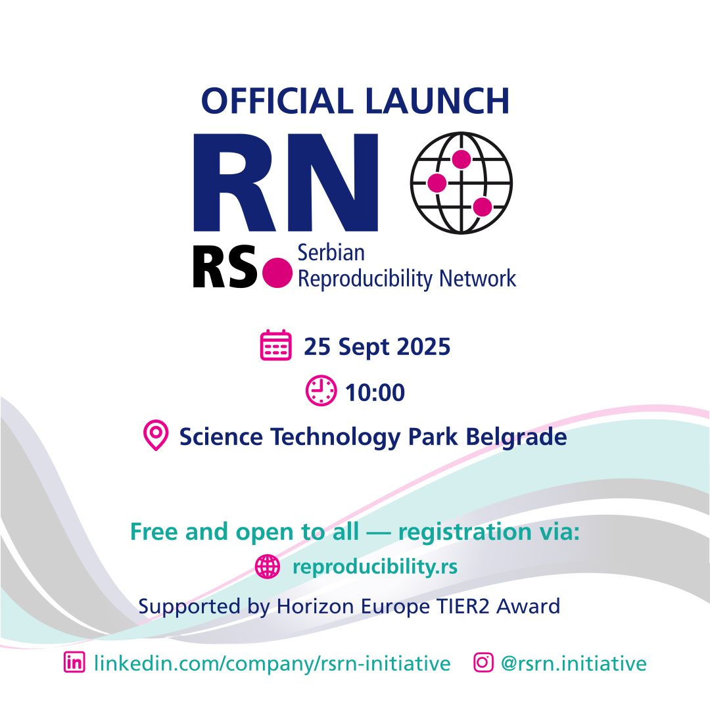

We are delighted to cordially invite open science community to the inaugural event of the Serbian Reproducibility Network (RS-RN), to be held on Thursday, September 25, 2025, from 10:00 to 18:00 h at the Science and Technology Park in Belgrade. The RS-RN is a pioneering national initiative dedicated to fostering transparent, reliable, and collaborative research in Serbia. By uniting researchers, academic institutions, and advocates for reform, RS-RN aims to enhance research integrity, openness, and interdisciplinary cooperation across all career stages.
Supported by the prestigious Horizon Europe TIER2 award, this launch marks a significant milestone in the mission to elevate research standards and cultivate a culture of transparency and institutional progress in Serbia. We hope that RS-RN will contribute significantly to the scientific excellence in Serbia and we look forward to your participation in this landmark event!
Event Details:
-
Event Program - available via dedicated RS-RN webpage
-
Registration - Free and open to all, with mandatory registration via Google form
